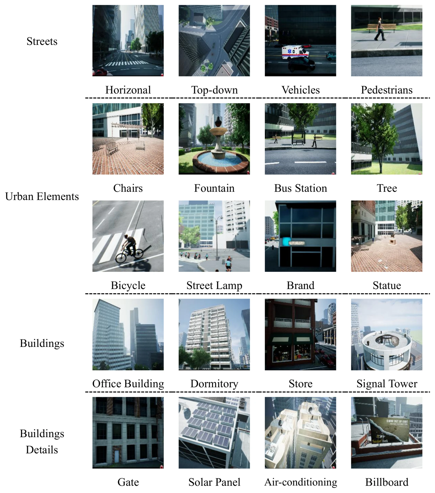

VISION-LANGUAGE NAVIGATION · IROS 2025
SkyVLN
Vision-and-Language Navigation and NMPC Control for UAVs in Urban Environments
- 1Intelligent Transportation, Hub of Systems, The Hong Kong University of Science and Technology (Guangzhou), China
- 2Intelligent Transportation Thrust and Robotics and Autonomous Systems Thrust, Systems Hub, The Hong Kong University of Science and Technology (Guangzhou), China
- 3Intelligent Transportation Thrust, Systems Hub, Internet of Things Thrust, Information Hub, The Hong Kong University of Science and Technology (Guangzhou), China
- *Corresponding author

OVERVIEW
An LLM navigation agent paired with NMPC control for urban UAV flight
SkyVLN is a framework for vision-and-language navigation with a UAV in a city: the aircraft follows a natural-language instruction from its own front-view observations. A multimodal agent assembled from off-the-shelf vision and language models, with no supervised training, extracts the landmarks an instruction mentions, describes where they appear in view, and keeps a memory of the path flown so that it can backtrack. A large language model reasons over these prompts and issues motion commands, and a nonlinear model predictive controller (NMPC) executes them while avoiding dynamic obstacles. The system is evaluated in a 3D urban simulator built on AirSim and Unreal Engine 4.
-
01
Fine-grained spatial descriptions
A High-resolution Spatial Descriptor divides each view into nine sectors, so a landmark is described by where it lies within the view and not only by which view it is in.
-
02
A memory to backtrack with
A TrackBack Memory Array stores visited landmarks and the instructions between them as a graph, from which the agent derives a feasible path when an instruction is ambiguous.
-
03
NMPC for dynamic obstacles
The controller optimises thrust and roll and pitch references over a prediction horizon, under collision-avoidance and input-rate constraints.
METHOD
Perceive, refine the prompt, reason, then control
The system has a multimodal perception module and an action module based on nonlinear model predictive control. The agent perceives the environment from the instruction and from front-view RGB, depth and semantic images. Wayfinding Prompt Optimization (WPO) extracts richer spatial information from the perception results and draws on a memory of past trajectories. An LLM motion generator takes these navigation prompts together with a system prompt and an action prompt, and outputs its current thought and action. Navigation ends when the agent predicts STOP or reaches the maximum number of actions.
![Block diagram in three parts connected in a loop. Multimodal Perception: visual observations (RGB image, depth image, another view, 2D semantic masks) go to a visual foundation model, and a landmark extractor turns the navigation instruction into sub-goals such as white building, road and billboard. Wayfinding Prompt Optimization: a High-resolution Spatial Descriptor goes from a coarse observation through candidate locations and fine-grained spatial information extraction to a spatial description; a TrackBack Memory Array turns an ambiguous navigation instruction into a concrete one through a memory graph of observed landmarks and history paths. An LLM-based motion command generator produces a motion instruction set (go up, turn left, spin around, move backwards, stop). Nonlinear MPC Control for Dynamic Obstacle Avoidance: AirSim supplies the UAV state and the obstacle position and velocity; obstacle trajectory generation feeds an NMPC module with an optimization engine, whose roll and pitch references and thrust pass through a body rotation to an attitude controller that outputs motor commands.](assets/media/architecture.webp)
-
Landmarks and sub-goals
The drone's front camera pitches up and down but does not turn sideways, so the drone rotates to capture a panorama. GroundingDINO detects landmarks coarsely in each image, and an LLM extracts the landmark phrases from the instruction and decomposes it into sub-goals.
-
High-resolution Spatial Descriptor
Each view is divided into nine labelled sectors. For a landmark query the system takes the top-K candidate views; the LLM writes a description for each query–candidate pair and ranks the candidates from those descriptions.
-
TrackBack Memory Array
A graph whose nodes are landmarks already encountered and whose edges store the navigation instructions between them. A shortest-path search returns a navigable path between any two nodes, and a formatted prompt lets the LLM ask the commander a clarification question.
-
NMPC with obstacle constraints
Dynamic obstacles are modelled as spheres with a safety radius, with one constraint per predicted time step. The problem is solved with the PANOC algorithm through the OpEn optimization engine, and the outputs go to a low-level attitude controller.
![Diagram. A landmark text, “A building entrance with park billboard”, and an observation image of a simulated street divided into nine numbered views, #0 to #8, enter Grounding DINO (text encoder, multi-layer BERT, cross-attention, Swin Transformer, visual encoder). The resulting word features and visual features form a similarity-score matrix of the extracted sub-goal words against view IDs 0 to 8. The top 3 candidates, #3, #4 and #6, go to a multimodal LLM, which answers that the most likely spot is #3, located upper-forward, because its description matches the query most.](assets/media/spatial-descriptor.webp)
![Top left, “Action space caused by ambiguous instructions”: the UAV faces three available nodes, and the LLM says that no available choice aligns with the directive and proceeds to explore the west area. Top right, “Memory graph guided reasoning chain”: a graph of numbered places with the UAV at place 4; the LLM reasons that it has yet to visit place 1 starting from place 0, and should retrace its steps to place 3, a junction to reach place 2 and then place 0. Bottom: the same graph drawn over an aerial view of the simulated city, with incorrect paths in blue from node 3 to nodes 5 and 6, backstepping arrows in red to nodes 3, 2 and 0, and the correct path dashed from node 0 to node 1, next to a legend of node and path types.](assets/media/memory-graph.webp)
RESULTS
Navigation on the AVDN dataset, in simulation
The experiments use the AVDN dataset (Aerial Vision-and-Dialog Navigation), whose average path length the paper gives as 287 m. The algorithm is evaluated in AirSim and Unreal Engine 4 with GPT-4, on a laptop with a 12th-generation Intel i9 CPU and an NVIDIA GeForce RTX 4070 GPU. The depth sensor perceives 100 m ahead and the camera has a 90-degree field of view. The metrics are success rate (SR) and success weighted by path length (SPL). Every result below is from simulation.
- Success rate · unseen test
- 42.37%
- Full SkyVLN. NavGPT, the strongest baseline, reaches 16.6%. Table I.
- SPL · unseen test
- 28.11%
- Success weighted by path length, against 18.9% for NavGPT. Table I.
- Success rate · unseen validation
- 20.44%
- Against 10.8% for NavGPT. Table I.
- Success rate · seen validation
- 17.3%
- Against 14.6% for NavGPT; SPL 14.7% against 12.3%. Table I.
AVDN
The full model has the highest SPL and success rate on the seen validation and unseen test splits, and the highest success rate on unseen validation. On unseen validation its SPL (16.62%) is below that of the two variants without one of the prompt modules (18.3%) and of the NMPC variant (17.1%).
Table I of the paper: comparison on the validation and unseen test sets of the AVDN dataset, in simulation. SPL: success weighted by path length; SR: success rate. Both in %, higher is better.
| Model | Seen validation | Unseen validation | Unseen testing | |||
|---|---|---|---|---|---|---|
| SPL ↑ | SR ↑ | SPL ↑ | SR ↑ | SPL ↑ | SR ↑ | |
| Baselines | ||||||
| Random | 0.5 | 1.6 | 0.2 | 1 | 0.5 | 1.1 |
| CMA | 8.2 | 10.5 | 12.8 | 6.7 | 8.3 | 9.7 |
| Seq2Seq | 5.1 | 6.4 | 7.9 | 4.2 | 5.6 | 5.1 |
| NavGPT | 12.3 | 14.6 | 15.2 | 10.8 | 18.9 | 16.6 |
| SkyVLN variants, labelled as in the paper | ||||||
| w PID | 6.8 | 8.7 | 9.4 | 5.3 | 6.9 | 12.9 |
| w MPC | 14.34 | 17.3 | 16.5 | 20.4 | 12.9 | 15.17 |
| w NMPC | 13.9 | 16.2 | 17.1 | 18.5 | 22.4 | 26.8 |
| w/o HSD | 11.6 | 13 | 18.3 | 20 | 12.6 | 14.1 |
| w/o TMA | 11.57 | 12.97 | 18.3 | 19.95 | 18.17 | 15.32 |
| Ours Full | 14.7 | 17.3 | 16.62 | 20.44 | 28.11 | 42.37 |
The row labels are the paper's. w PID, w MPC and w NMPC are named after the controller; w/o HSD and w/o TMA are without the High-resolution Spatial Descriptor and without the TrackBack Memory Array. Highlighted values are the best in each column, ties included.
Controllers, language models and scope
Among the controller variants in Table I, the NMPC variant reaches 22.4% SPL and 26.8% success rate on the unseen test split, against 12.9% and 15.17% with MPC and 6.9% and 12.9% with PID. The paper also plots position, attitude and tracking-error curves for NMPC and for AirSim's Simple Flight controller, which uses PID, along a reference trajectory in a static-obstacle case and with an additional dynamic obstacle (Figs. 7 and 8 of the paper). An ablation over the language model on the unseen test split compares GPT-4V, GPT-4o and GPT-4 Turbo: GPT-4V has the highest success rate (34.9%) and the lowest navigation error (62.35 m), and GPT-4o the highest SPL (34.25%) (Table II of the paper).
All experiments in the paper run in the AirSim / Unreal Engine 4 simulator; it reports no hardware-in-the-loop or real-flight tests. The paper notes that AirSim's rotor aerodynamic model is rough, which can cause significant issues when agile, high-speed control is transferred from simulation to a real aircraft. It names as future work the balance between safety and mission efficiency, coordinated multi-UAV operation, and severe environmental conditions.
SIMULATOR
The city simulator and an example task
The paper builds a 3D city on AirSim and Unreal Engine 4, with buildings, streets, vehicles, pedestrians, street furniture and vegetation. The space is continuous, so the simulated drone can fly to any point in the environment. At each step the simulator outputs an RGB image, a depth image and a semantic-segmentation image of the front view.
![Left: an aerial view of a simulated city block with a yellow trajectory that loops around buildings to a chequered flag, three inset images (depth image, semantic mask, first-person view), and the instruction: go past the intersection and turn left; fly along the right side of the street at least 5 metres from the building; after delivering the package at the sixth floor at the next crossroad, continue to the larger roof of the pink building, which is the landing point; then reset to the original point. Centre: five first-person frames labelled start point, landmark 1, delivery spot, landmark 2 and landing point. Right: the system prompt, which casts the LLM as an embodied UAV assistant that may only use the defined functions, and the action prompt, which describes the AirSim interface: ask a clarification question, give a reason, or output code with the commands get_position and fly_to.](assets/media/example-task.webp)

No hardware-in-the-loop or real-world flight is shown or claimed on this page: every image is from the simulator.
CITATION
@inproceedings{li2025skyvln,
title={SkyVLN: Vision-and-Language Navigation and NMPC Control for UAVs
in Urban Environments},
author={Tianshun Li and Tianyi Huai and Zhen Li and Yichun Gao and
Haoang Li and Xinhu Zheng},
booktitle={2025 IEEE/RSJ International Conference on Intelligent Robots
and Systems (IROS)},
pages={17199--17206},
year={2025},
doi={10.1109/IROS60139.2025.11247609},
eprint={2507.06564},
archivePrefix={arXiv},
}